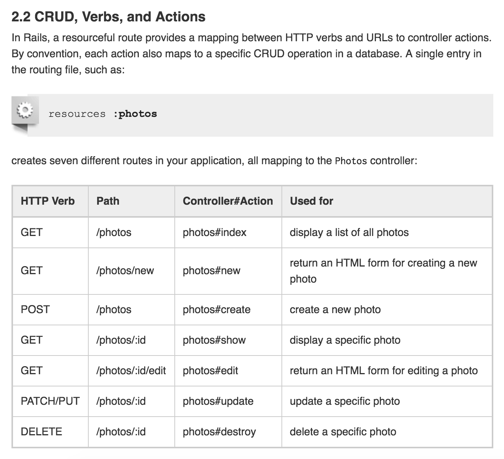

A Sinatra routing resource.
RESTular is a learning tool created for those learning about RESTful routing in Sinatra, Ruby on Rails or really any app that serves data. I was inspired to build it after reading the Rails docs on CRUD and seeing this picture:
I thought to myself 'wouldn't it be cool if you could just put your table name and it would show you your routes?'
I built the first iteration of this site over the weekend during Dev Bootcamp Chicago in November 2015. I've updated it quite a bit since, I even rewrote it to learn AngularJS.
It's been a while since I built an app with this site, so I'm sure some of the routes could use updating or are plain wrong⏤ If you see something messed up, I highly appreciate suggestions or corrections. Feel free to email me at georgewambold@gmail.com or contribute an issue to the GitHub repo.
Thanks for using RESTular, I hope it made your life a little easier!